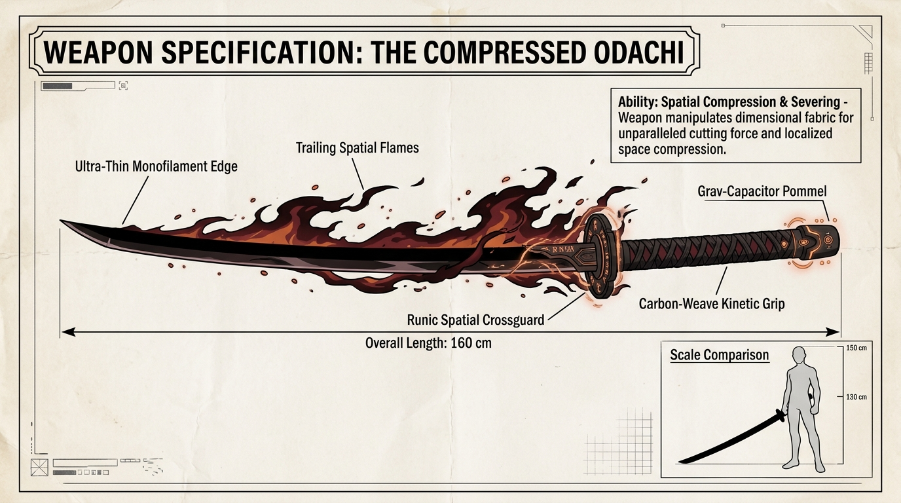
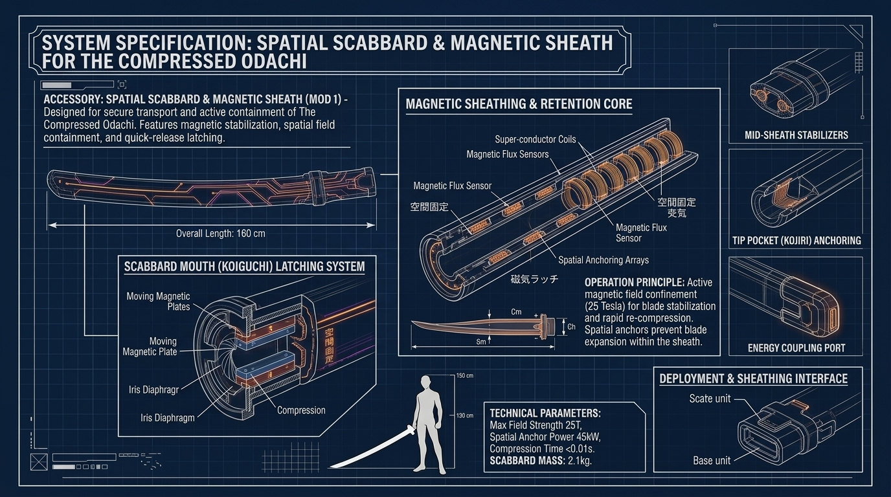
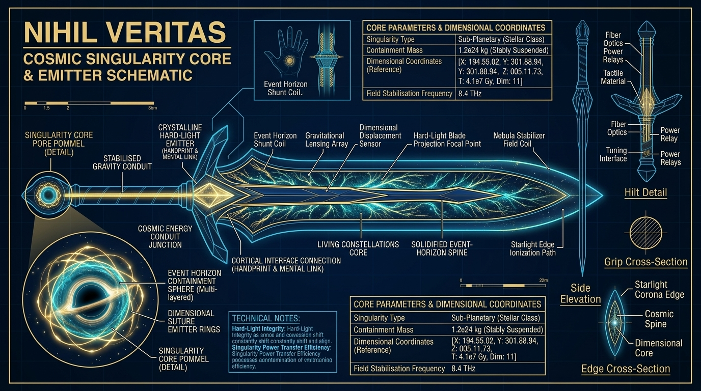

WEAPON SPECIFICATIONS
Tactical engineering schematics, metallurgy, and kinetic handling matrices. Inspect the dual master blades forged for high-velocity iaido duels and exospheric rift stabilization.
WEAPON DOSSIER // CLASSIFIED
EVENT HORIZON ARSENAL

THE COMPRESSED ODACHI
SLENDER OBSIDIAN SPATIAL BLADE
● SPECIFICATION SHEET VERIFIED
// STRUCTURAL COMPONENT BREAKDOWN
// COMBAT TELEMETRY & PERFORMANCE METRICS
// ARCHIVAL CLASSIFIED SCHEMATICS
COMPLETE WEAPON BLUEPRINT ARCHIVE
FOUR MASTER SPECIFICATIONS • 4K LIGHTBOX EXPANDABLE
16:9 SCHEMATIC
MODE I // BLADE SCHEMATIC
THE COMPRESSED ODACHI // 160CM MONOFILAMENT
16:9 COMPONENT

MODE I COMPONENT // SCHEMATIC
SPATIAL SCABBARD & 25T MAGNETIC SHEATH
16:9 SCHEMATIC

MODE II // BLADE SCHEMATIC
NIHIL VERITAS // SOLIDIFIED EVENT HORIZON
16:9 COMPONENT

MODE II COMPONENT // SCHEMATIC
COSMIC SINGULARITY CORE & EMITTER MATRIX